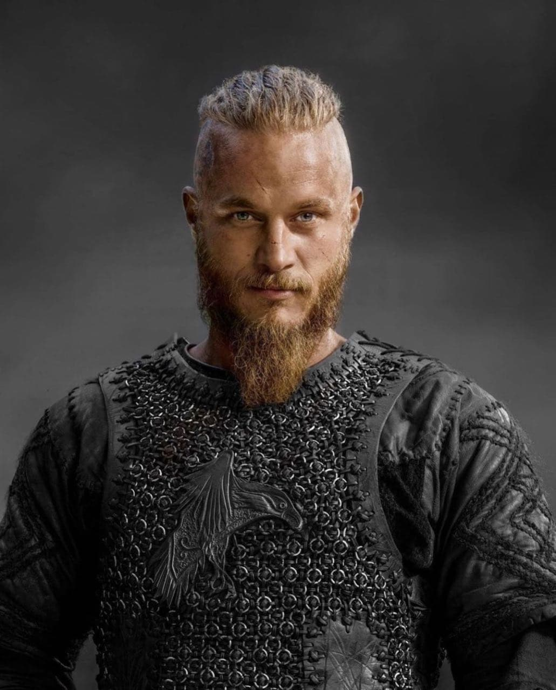

راگنارلاثبروکیکی از قهرمانان باستانی در عصر وایکینگ ها بود که در اشعار اسکاندیناوی باستان و افسانه های حماسی به شکل کاملاً متفاوتی روایت شده است. طبق افسانه ها، او کشاورزی بود که به دلیل شجاعت و دلیری ای که از خود نشان داد به حکومت اسکاندیناوی دست پیدا کرد و شاه شد و شهرت زیادی پیدا کرد طوری که نژاد و وایکینگ ها را از روی وی می شناختند. برادر او رولو نام داشت. راگنار در زندگی خویش سه بار ازدواج کرد که همسر اول او، لاگرتا، زنی جنگجو بود؛ زن دوم او، «ثورا» فرزند «هراثور» که از نجیب زادگان بود و همسر سوم او آسلاگ که دختر زیگورد بود. او فرزندان زیادی داشت از جمله آن ها بیورن آیرونساید از لاگرتا، که اولین فرزند راگنار بود و شجاعت زیادی داشت و همچنین آیوار بی استخوان و اوبه و سیگوارد چشم ماری و هیتسرک از همسر سوم خود اسلاگ بود.
در سفر آخر به شاهنشاهی نوثامبریا، راگنار خود را به شاه ایلا تقدیم کرد و آن ها او را به چالهٔ از مارهای سمی انداختند اما جسد او هیچ وقت پیدا نشد.
فرزندان رگنار، بیورن آیرونساید ،آیوار بی استخوان، اوبه، هیستریک، سیگارد و با حضور شاه هارالد به شاهنشاهی نوثامبریا حمله کردند و شاه ایلا را دستگیر کردند سپس بیورن دلاور به شیوهٔ عقاب خونی شاه ایلا اعدام کرد. سپس آن ها به وسکس مرکز حکومت پادشاه اکبرت یورش برده و پس از شکستی سخت که به ارتش ساکسون ها وارد کردند قلعه اکبرت تسخیر و او نیز کشته شد و پس از آن فرزندان رگنار بر سر قدرت با یکدیگر دشمن شدند.

ترویس فیمل بازیگر نقش رگنارلاثبروک در سریال (vikings)
Ragnar is said to have been the father of three sons—Halfdan, Inwaer (Ivar the Boneless), and Hubba (Ubbe)—who, according to the Anglo-Saxon Chronicle and other medieval sources, led a Viking invasion of East Anglia in 865. They may have sought to avenge Ragnar’s death, which may or may not have been murder, or they may have been claiming land to which they believed they had a right as a result of a previous invasion by Ragnar that may or may not have actually happened. This sort of ambiguity pervades much that is thought to be known about Ragnar, and it has its roots in the European literature created after his death.

Ragnar Lothbrok's Sons and King Ælla's Messengers
by August Malmström (Public Domain)
The Saga of Ragnar Lothbrok
The best-known and main source telling of Ragnar's life and heroic deeds is the 13th-century Icelandic The Saga of Ragnar Lothbrok (Old Norse: Ragnars saga loðbrókar). It is part of the fornaldarsögur genre – legendary sagas whose stories took place before Iceland's colonisation from the 870s CE onward - and fit in neatly with the wave of Icelandic saga-writing that engulfed the island around this time. These types of heroic legends tended to link back to the mythical beginnings of historical Scandinavian families and often ended with their champion's death. The Saga of Ragnar Lothbrok shows Ragnar as the ancestor of an Icelandic family and depicts independent rulers of various kingdoms interacting with each other, as well as, fitting with the genre, ending with his death.
The story opens with the childhood of Aslaug, who will go on to become Ragnar's second wife. We are told she is the daughter of Sigurd and Brynhild (the legendary dragonslayer and the Valkyrie from Germanic mythology further popularised by Wagner), who die when Aslaug is only three years old. She grows up in Norway, taken in by a poor family who name her Kráka ('crow') and keep her parentage hidden.
Meanwhile, Ragnar, who is the son of King Sigurd Ring of Denmark, grows up to be handsome and martially adept, "good to his men and cruel to his enemies", and a top warrior whom few could equal (The Saga of the Volsungs with The Saga of Ragnar Lothbrok, 89). His first exploit is assisting the jarl of Götaland, Herruð, with his dragon-problem – a snake grown out of proportion within their town. With a new outfit of shaggy trousers and cloak boiled in pitch, he spears the dragon to death while his clothes protect him from the fiend's blood, receiving the jarl's daughter Thora's hand in marriage as a reward. Their marriage is a happy one and results in two sons, Eirek and Agnar. When Thora falls ill and dies, a heartbroken Ragnar goes raiding rather than ruling, and one summer he sails to Norway and stumbles upon the farm where Kráka lives. Desiring to marry her when he learns of her beauty, he sets her a test of wisdom – basically a riddle to solve – which she passes with flying colours.
Their children include the literally boneless Ivar the Boneless – a result of a curse placed on Kráka if her husband was too eager on her wedding night and thus entirely Ragnar's fault – as well as Bjorn Ironside, Hvitserk, and Rognvald, who all go on to have adventures. All this time, Ragnar thinks Kráka is a simple peasant girl, and he is eventually convinced to marry the daughter of the Swedish king instead. However, Aslaug has by now reclaimed her own name and ancestry and tells Ragnar about it, proving her point by foretelling that their next son will be born with eyes with snakes in them. Sigurd Snake-in-the-Eye consequently rescues their marriage.
The unfinished business with the Swedish king, whose daughter's engagement had abruptly ended, leads to a series of events including Eirek and Agnar trying to battle the Swedes but encountering a magical cow that protects the Swedish army, and Aslaug changing her name to Randalín and taking her sons into the battle, too. They successfully turn the tide. The saga finishes with Ragnar swearing a boastful oath that he will invade England with just two ships, which turns out to be foolish. He is captured by King Ælla of Northumbria and thrown into a snake-pit, where he dies, but is avenged by his sons who bring their might to England. According to this story, they torture Ælla to death by performing the notorious (and probably not historical) blood-eagle on him.
The Tale of Ragnar's Sons
Following directly upon the above story, sometime between the late 13th and early 14th century CE, again in Iceland, The Tale of Ragnar's Sons (Ragnarssona þáttr) was written. It was set up to be an 'improvement' upon The Saga of Ragnar Lothbrok and depicts a bigger Viking empire stretching to Norway, England, and the Baltic. This is instantly apparent at the start, where Ragnar is said to be the son of King Hring who had territories in Sweden and Denmark, which Ragnar ruled over after his father's death, and unmistakable in the last paragraphs that show his sons ruling various kingdoms across England, parts of Denmark, Germany, the Baltic, Sweden, and Norway. This work includes his sons Eirek and Agnar by Thora, and Ivar the Boneless, Bjorn Ironside, Hvitserk, and Sigurd Snake-in-the-Eye by Aslaug.
The Tale of Ragnar's Sons preserves most of the core elements of The Saga of Ragnar Lothbrok story, with some altered details, summaries, omissions, and the addition after Ragnar's death of a lengthy extrapolation on the exploits on his sons. Ragnar himself is moreover shown as ruler of multiple realms and as a good and just overlord of his tributary kings. However, here, Ragnar is the ancestor of only the Danish and Norwegian royal dynasties; interestingly for a work produced by an Icelander, Iceland is left out of the matter entirely.
Ragnarsdrápa
Amongst these 13th-century CE or later works concerning Ragnar, the Old Norse skaldic – or courtly – poem Ragnarsdrápa ("the poem about Ragnar") catches the eye with its attribution to the 9th-century CE Norwegian court poet Bragi Boddason. The poem describes mythological scenes painted or carved on a shield which was allegedly gifted to Bragi by a man named Ragnar, who is identified by another Old Norse poem to be Ragnar Lothbrok. However, doubt has been cast on this identification, as it may just as easily refer to some later Ragnar instead, and the dubious historicity of Ragnar Lothbrok does not speak in favour of him having had direct contact with the historical Bragi.
Krákumál
The 12th-century CE Old Norse skaldic poem Krákumál (meaning "words of the crow", better known in English as The Death-Song of Ragnar Lothbrok) zooms in on a specific part of the Ragnar-legend: his death. The poem ties in with the commonly told story of Ragnar's capture by Ælla of Northumbria, who throws him into a snake-pit to die, and presents itself as Ragnar's death-song, composed by him while he was waiting for his rather slow death at the hands (well, fangs) of the creatures. However, it is not likely to actually be written by Ragnar. Even if he was historical, which is doubtful, the poem's language is that of the 12th century CE, not the 9th in which Ragnar would have lived, and it does not bear the Danish features you would expect from a Danish Viking.
As befits a Viking hero, Ragnar reminisces on all his battles and the daring feats he has performed during life, all stanzas except the last beginning with the striking line "We cut with a sword". Gradually succumbing to the venom, he speaks out the hope that his sons will avenge him. After tallying up the score of his life, he realises he has no reason to fear death because he will surely be admitted into Odin's Hall, Valhalla, to feast there. Ragnar ends with an optimistic "laughing I shall die" (in Old Norse: æjandi skalk deyja).
The poem presents a slightly different version of the Ragnar legend as it mentions several locations and people that are not present in later material such as the 13th-century CE The Saga of Ragnar Lothbrok or the Gesta Danorum.
Other Old Norse Sources
While Ragnar clearly features heavily in certain sources, there are also more indirect mentions in other Old Norse sources tying in with his life and legend. Two other Icelandic fornaldarsögur carry his mark. Firstly, Bósa saga ok Herrauðs, written around 1300 CE, has the eponymous Herrauðr as the father of Ragnar's first wife, Thora. Secondly, the early 14th-century CE Hálfdanar saga Eysteinssonar depicts its hero as the great-great-grandson of Sigurd Snake-in-the-Eye, Ragnar's son. Further, Bárðar saga Snæfellsáss (possibly 14th century CE) contains a character named Raknarr who is equated with Ragnar Lothbrok by some scholars. Glimpses can also be caught of our hero in the skaldic poem Háttalykill composed c. 1142 CE by a jarl from Orkney, Rögnvaldr kali Kolsson, and Hallr Þórarinsson, an Icelander. Only fragments have been preserved of the part of the poem referencing Ragnar, though, and so besides mentioning a boneless person and hinting at Ragnar's meeting with King Ælla, it does not add much more to the tradition.

Saxo's Gesta Danorum
by Wikimedia Commons (Public Domain)
The Latin Sources
Ragnar's legend spread beyond the Old Norse language, too, into Latin works from medieval Denmark, England, and France. The Gesta Normannorum ducum ("Deeds of the Norman Dukes") written in the mid-11th century CE by the Norman monk William of Jumièges, has Ragnar sitting comfortably at home in his Danish kingdom while a son of his wreaks havoc all over France. Similarly differing from the main line of Ragnar's legend, the c. 1140 CE Brevis historia regum Dacie , a chronicle of Danish kings, depicts one of Ragnar's sons as conqueror and king of Denmark. The mid-12th century CE De infantia Sancti Edmundi written in England has Ragnar and three sons leading the Danish invasion of England. This may reference the historical Viking landing of a large army in East Anglia in 865 CE, set out to conquer all Anglo-Saxon kingdoms in England. A figure traditionally identified as Ragnar Lothbrok, a Viking chieftain named Reginherus, is named in the 9th-century CE Frankish Annals of St. Bertin as leading the invasion on Paris in 845 CE, but being paid a huge sum to leave by the Frankish ruler Charles the Bald (r. 840–877 CE).
The main Latin source devoting many pages to Ragnar Lothbrok is the Gesta Danorum ("Deeds of the Danes") probably written in the early 13th century CE by Saxo Grammaticus. It kicks off with Ragnar sallying across Denmark and Norway, where he meets Lagertha (or Lathgertha, likely a Latinisation of the Old Norse Hlaðgerðr), who is not named in any other source. She is described as Ragnar marries her but later divorces her for a lack of trustworthiness, after which the familiar Thora-and-the-dragon story proceeds in embellished fashion, with Ragnar battling not one but two huge serpents. After her untimely death, Ragnar goes raiding far and wide, and eventually marries Swanloga, with whom he has sons Ragnald, Hwitserk and Erik. When Swanloga, too, dies of a disease, Ragnar unleashes his fury on England, slaying King Hame, father of Ælla, of Northumbria. Ælla then seeks out Ragnar's accomplices among the Irish, punishing them, after which Ragnar gathers a fleet and attacks him but fails, and the familiar snake-pit and succeeding revenge by his sons follow. A stand-out element of the Gesta is another son, Ubba (or Ubbe), who is a result of Ragnar tricking a farm-daughter and getting her pregnant. He also appears in the Annals of St. Neotts (12th century CE) as the brother of Ivar, both being described as the sons of Lothbrok.
Is He a Historical King?
Dragons and other obviously mythical elements aside, the question of whether Ragnar Lothbrok himself actually existed as a historical figure is difficult to answer definitively, especially when dealing with sources that are far from unanimous in what they say about him. Moreover, the period of the legends – the 9th century CE – is not well covered in historical sources. The legends themselves, although springing up at least as early as the 12th century CE, also postdate their subject matter by a fair bit. Many Viking names were also quite common, making the identification of individuals much harder.
Certain events, such as the siege of Paris in 845 CE, are historical, as are certain persons such as King Ælla of Northumbria who reigned around 866 CE when a Viking invasion of the Anglo-Saxon kingdoms shook the lands. As far as we know, outside of the Ragnar legends, the reasons for this invasion have nothing to do with anyone seeking vengeance for their father's death, though. The Anglo-Saxon Chronicle does mention a 'Hingwar' and 'Hubba' as chieftains of this great Viking army, as well as a certain 'Halfdene' (Anglo-Saxon Chronicle for 870 & 871 CE). They have often been connected with Ragnar's sons Ivar the Boneless and Ubba - with 'Halfdene' or Halfdan possibly representing the Hvitserk of the Old Norse tradition - although contemporary chronicles are entirely silent on this matter. King Ælla's historical death is noted in the Anglo-Saxon Chronicle too: he is said to have been slain in battle with Viking forces at York in 867 CE, with no mention being made of the gruesome blood-eagle torture method perpetuated by the Ragnar legend.
As for Ragnar himself, as far as we know, there was no one historical person that matches his alleged deeds (and sons) to any proper degree. It is more likely that in the centuries after the adventurous 9th-century Viking heyday of raids, stories cropped up to unify various historical events and known persons under one roof. Several historians have indeed argued that Ragnar Lothbrok may be an amalgam of various historical figures, tied together into one mythical hero who was the scourge of 9th-century CE northern Europe and father of many famous sons. Perhaps the historical figures who became known as Ragnar's sons were famous enough to be assigned such a prestigious ancestry.
Candidates who may have been cool enough to be immortalised in heroic stories as Ragnar Lothbrok are the Danish King Horik I (r. 827-854 CE), who actively raided the Frankish lands of Louis the Pious, son of Charlemagne; King Reginfrid of Denmark (d. 814 CE); the Norse chieftain Reginherus who led the Viking attack on Paris in 845 CE but who is mysteriously unknown outside of this one single event; the Reghnall (or Raghnall) appearing in the Irish Annals; or the father of the Viking leaders involved in the invasion of the Anglo-Saxon Kingdoms in 865 CE.
Vikings
Viking , also called Norseman or Northman, member of the Scandinavian seafaring warriors who raided and colonized wide areas of Europe from the 9th to the 11th century and whose disruptive influence profoundly affected European history. These pagan Danish, Norwegian, and Swedish warriors were probably prompted to undertake their raids by a combination of factors ranging from overpopulation at home to the relative helplessness of victims abroad.
Who were the Vikings?
The Vikings were raiders, pirates, traders, explorers, and colonizers during the 9th to 11th century. They often traveled by sea from Scandinavia and took control of areas of Europe and beyond.
What was the Vikings' religion?
The Vikings' original religion was the pagan and polytheistic Old Norse religion, which can be traced back to about 500 BCE in what is now Denmark. As Christianity took hold in Scandinavia, beginning in the 8th century CE, its followers dwindled in numbers. However, this older tradition continued Viking culture.
Why did Viking raid stop?
The defeat of the king of Norway, Harald III Sigurdsson, at the Battle of Stamford Bridge in 1066 is considered the end of the age of Viking raids. A number of broader factors contributed to the Vikings’ decline: more and more communities previously attacked by Vikings became better able to defend themselves, with armies and fortifications; Christianity’s spread in Europe; and less egalitarianism in Viking society.
Why do Viking helmets have horns?
The stereotype of Viking helmets having horns goes back to costuming in 19th-century opera. In reality, horned helmets would have been impractical during combat. They may have been worn only for ceremonial purposes in pre-Viking times. The main style of actual helmets was the spangenhelm, consisting of several pieces of iron riveted together.
How did Viking warriors dress?
Viking men would normally wear a woolen overtunic, linen undertunic, either tight or baggy trousers without pockets, woolen leg wrappings, and waterproof leather shoes. Vikings’ typical wartime apparel included the spangenhelm helmet and lamellar or leather armour or chain mail.
How was Viking society organized?
Viking society was organized into three classes: karls, who were freemen and landowners; jarls, who were wealthy nobles tasked with maintaining the well being of their subjects; and thralls, who were either slaves or bondsmen, the latter having to work for other men until they could pay their debts.
Did Viking women fight?
Viking women were able to own property and divorce their husbands, and they often ran their family's finances and farms in their husbands' absence. There are also a few records of women dressed like men learning to use swords and fighting—so-called “shieldmaidens,” the most famous of whom was Lagertha, the wife of Ragnar Lothbrok.

Lagertha
Lagertha as imagined in a lithography by Morris Meredith Williams in 1913
Where did the Vikings live?
The Vikings originated from the area that became modern-day Denmark, Sweden, and Norway. They settled in England, Ireland, Scotland, Wales, Iceland, Greenland, North America, and parts of the European mainland, among other places.
How did Viking raid affect Europe
The impact of Viking raids on Europe included a greater Scandinavian influence on language in conquered areas. For example, in English the weekdays Thursday and Friday are named after the Nordic deities Thor and Frigg, also called Freyja. The Viking raids also left a literary legacy of sagas as well as an imprint on the DNA of local populations.